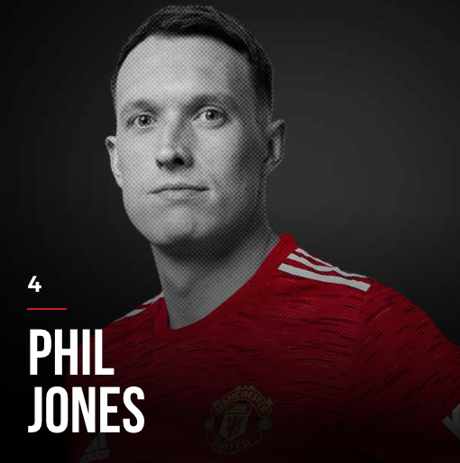
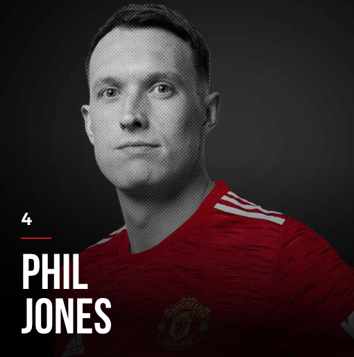

TOTAL TRANSFER MARKET VALUE: GBP 375 MILLION
Victor Lindelof, Swedish, age 27
Eric Bailly, Ivorian, age 27
Phil Jones, English, age 29
Harry Maguire, English, age 28
Raphael Varane, French, age 28
Diogo Dalot, Portugese, age 22
Luke Shaw, English, age 26
Alex Telles, Brazilian, age 29
Aaron Wan-Bissaka, English, age 24
Brandon Williams, English, age 21
Axel Tuanzebe, English, age 24
Teden Mengi, English, age 19
 



Maguire is currently the captain of the team. However, with his recent form, supporters start to ask for a change in the captain position. With GPB 80 million in transfer, the supporters expect much more from him, but so far he is not doing his best to be worth the price.
Bailly, Jones, Shaw and Dalot are easily prone to injuries. However, their play style is very concrete for the defending system, and always on fire in every match. The supporters love them a lot, but for the growth of the club, they think it is good time to say good bye.
Currently, Lindelof and Varane are the most trusted for the center-back positions. Varane is famous for "playing with brain", which means he can read the mind of the opponent forwards. Lindelof is famous for accurate long ball passes to the forwards up the opponent goal zone, which has created a lot of chances and goals for the team.